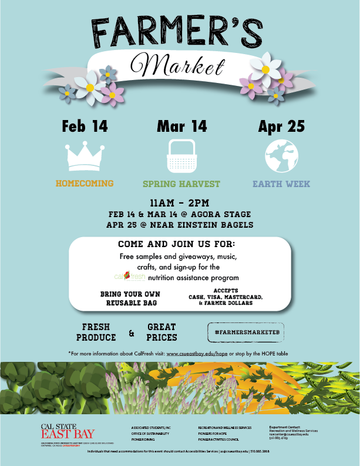

California State University, East Bay
Recreation and Wellness Center
Infographic Design, Illustration, Print, Signage
RAW Sustainability Committee
Signage designs for paper towel dispensers and mirrors inside each restroom facility. The goal was to encourage RAW members, including students, staff, and faculty to lessen their carbon footprint by reducing their paper towel and water usage by exercising these sustainable practices.
The color red and typeface is chosen to be consistent with the department's brand and professional appeal. Infographics are used to keep the directions easy and fast to follow.
Halloween Fest
Signage redesign for the annual Halloween Fest. The first photo below is the original design made by another student and is followed by its replacement.
To create a fresh approach, the new design strays away from the typical orange and black halloween colors and the illustrations are updated in relation to the haunted trucks that are at the event. The background concept uses more details and textures to show a unique and enticing narrative.
Farmer's Market
An event that is held on campus each semester. Illustrations were redesigned to reflect a spring theme and to highlight earth week. Cool tones are used to complement the colors of flowers and spring produce. Posters are altered to fit different electronic signage formats.
